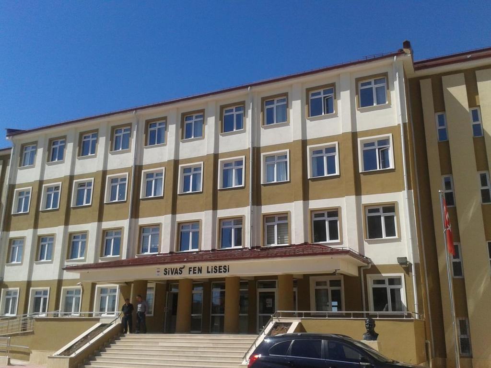
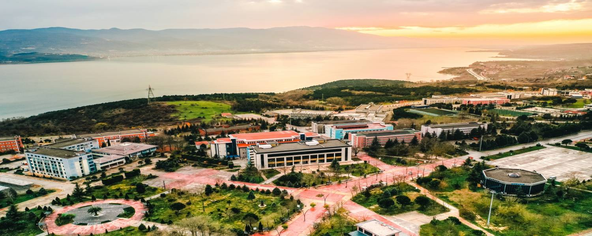
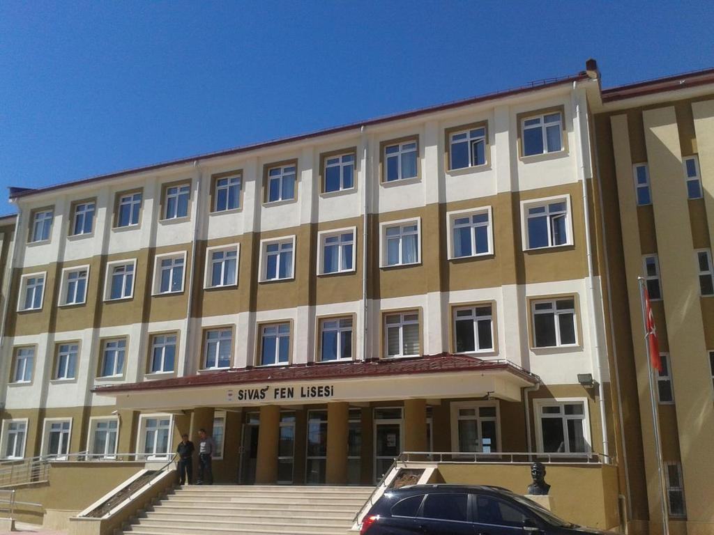
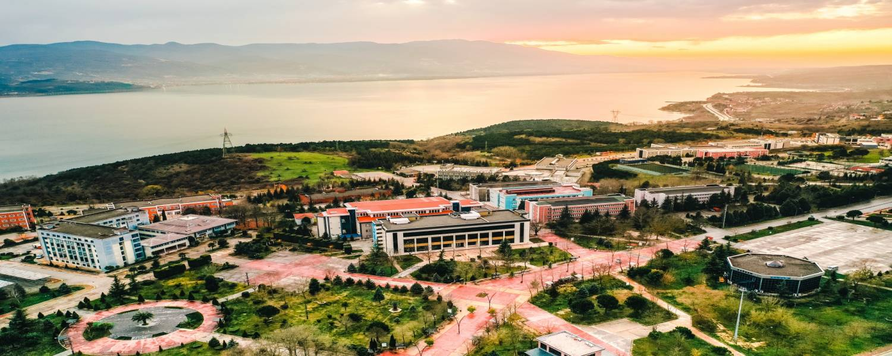

Hoş geldiniz
Merhabalar hakkımda kısmına hoş geldiniz.Ben Berkay ÇONGAR 1 ocak 2002 yılında Sivas'ta doğdum.Kalabalık olmayan bir ailenin 2. çocuğuyum Bekir isminde bir abim var. Küçük yaşlarda spora ilgi duymaya başladım. 9 yaşımda Sivasspor klubünün altyapısına girdim ve bu yolculuğum 15 yaşıma kadar devam etti. Bu yolculuk esnasında sayısız maç deneyimim oldu ama maalesef sakatlandığımdan dolayı futbolu bırakmak durumunda kaldım.Liseyi Sivas Fen Lise'sinde okudum ve tamamladım. Lisedeyken de basketbola ilgi saldım ve okul takımında 4 yıl boyunca yer aldım bu sırada bir çok kupa kazandık ve şehir dışında turnuvalara katılmaya hak kazandık benim için cidden eğlenceli ve dolu dolu bir serüven oldu . 1 yıl mezuna kaldıktan sonra 2021 YKS sınavındaki başarı puanım ile Sakarya Üniversitesi Bilgisayar Mühendisliği bölümüne yerleştim . 1 yıl hazırlık okuduktan sonra şuan 1. sınıf mühendislik öğrencisiyim.
 



Hobilerim
- Dizi izlemek
- Online oyun oynamak
- Spor yapmak
- Dövme tasarımı
- Lego yapmak
Sivasspor
Sivas Fen Lisesi
Sivas Fen Lisesi